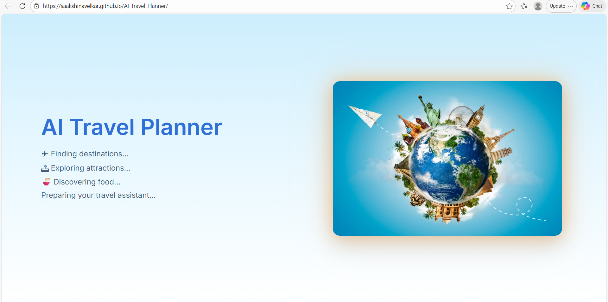
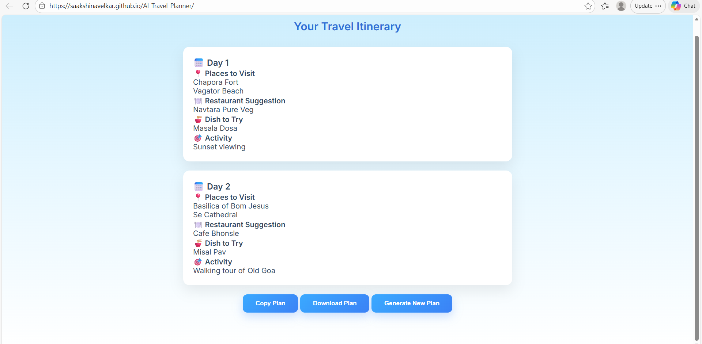

This project is a web-based application that generates personalized travel itineraries based on user input. The user enters details such as destination, number of days, budget, and food preference, and the system creates a structured day-wise travel plan. The output is generated by sending the user input to an external API (Google Gemini), which returns a complete travel plan. This makes trip planning faster and easier by providing ready-made suggestions based on user preferences.
This project is developed as a full-stack web application where the frontend and backend work together to generate travel plans. When the user opens the website, they first see an intro screen and then a form where they enter travel details such as destination, number of days, budget, and food preference. After submitting the form, the frontend collects the input data and sends it to the backend server through an API request. While the plan is being generated, a loading screen is displayed to improve user experience. The backend receives the input and sends it to the Google Gemini API in a structured format. Based on this input, the API generates a day-wise travel itinerary. The response is then sent back to the frontend. The frontend processes this data and displays it in a clear and organized format using cards. Each card represents a day and includes places to visit, food suggestions, and activities. This makes the output easy to understand and visually appealing. The application also allows users to copy the generated plan, download it as a text file, and regenerate a new plan without reloading the page. The frontend is hosted on GitHub Pages, and the backend is deployed on Render, allowing the application to run online smoothly.

